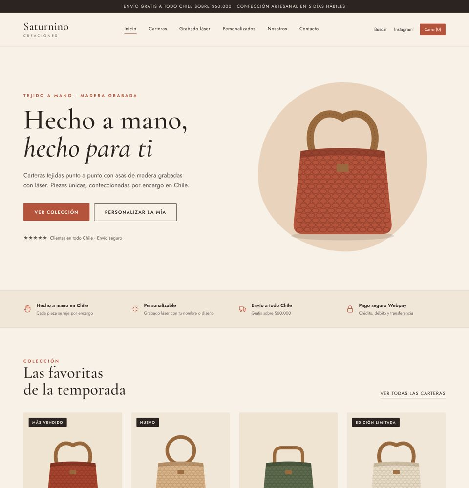
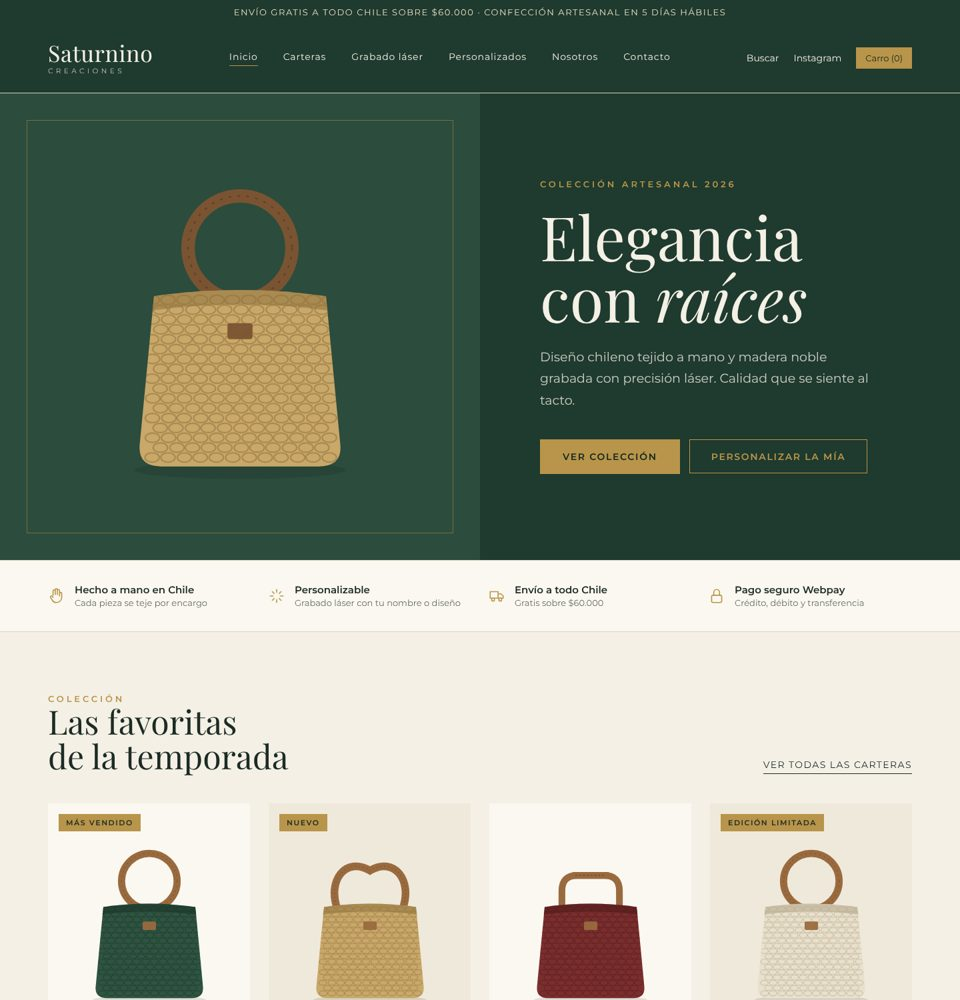
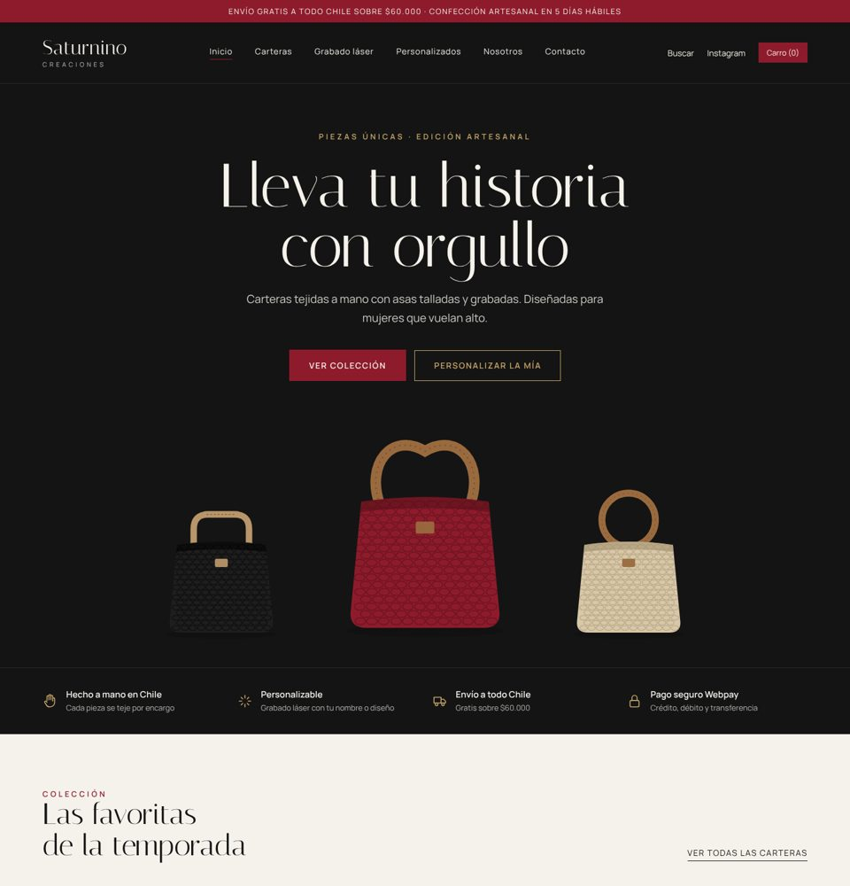
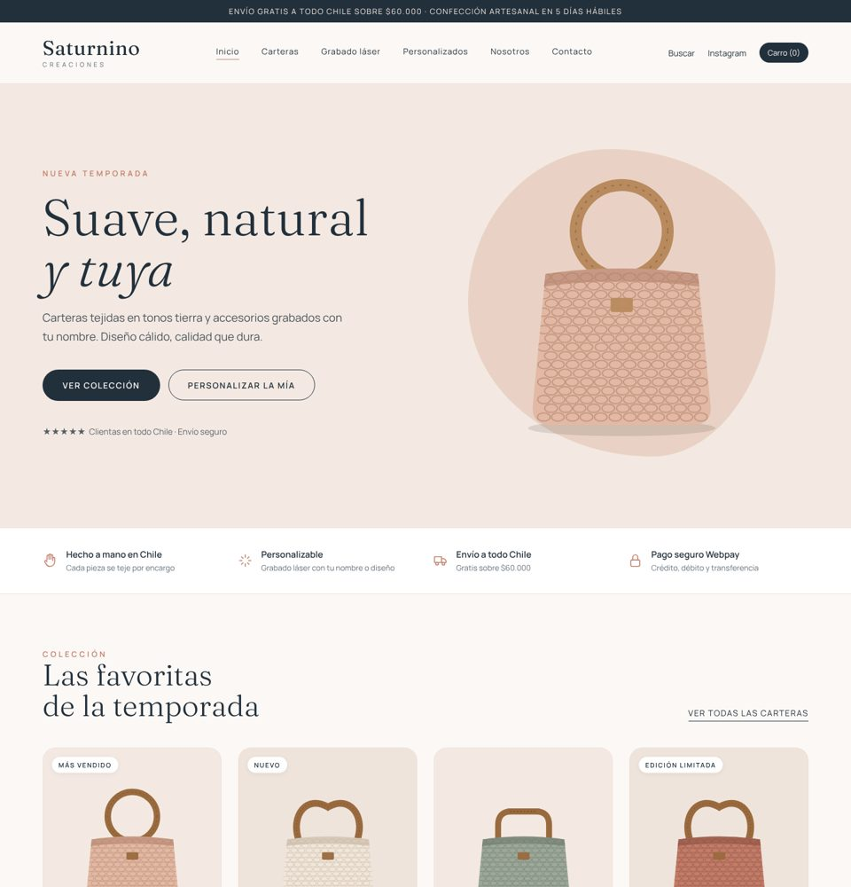

Nuevas propuestas navegables · escritorio y celular


05Editorial
Estilo revista de moda: tipografía Bodoni gigante, collage asimétrico y franja verde oliva. Transmite diseño de autor y exclusividad.
Ver páginaImagen completa


06Atelier Oliva
Cálido y natural: verde oliva, arena y óxido; formas de arco, sello giratorio "hecho a mano" y accesos rápidos a categorías.
Ver páginaImagen completa


07Azul & Arena
La más orientada a vender: buscador en portada, accesos por categoría, cifras de confianza y tarjetas tipo tienda grande. Azul = seguridad, coral = acción.
Ver páginaImagen completa


08Malva Boutique
Femenina y sofisticada: arcos con filo dorado, ciruela y malva, cursivas elegantes. Conecta con el mensaje "para mujeres que vuelan alto".
Ver páginaImagen completa
Primeras propuestas 01–04


01Terracota Artesanal


02Verde Bosque & Oro


03Noir Boutique

04Nude Minimal navegable
En las imágenes de vista previa las carteras aparecen ilustradas. Las páginas navegables (botón «Ver página») muestran las fotos reales de la tienda y enlazan a cada producto en saturninocreaciones.com. La reseña es un espacio reservado: hay que usar reseñas reales de clientas.